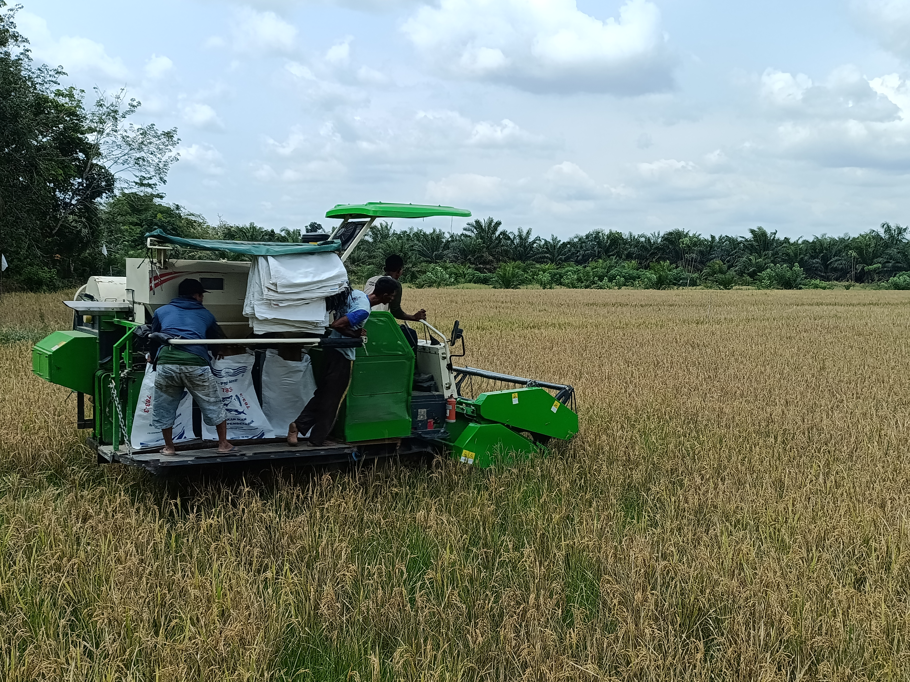

🌾 Pertanian Desa Ture
Sektor pertanian merupakan salah satu potensi utama masyarakat Desa Ture. Berbagai kegiatan pertanian terus dikembangkan untuk mendukung ketahanan pangan dan meningkatkan kesejahteraan masyarakat desa.
🌱 Potensi Pertanian
Desa Ture memiliki potensi pertanian yang cukup besar, khususnya pada sektor tanaman pangan. Aktivitas masyarakat dalam mengelola lahan pertanian menjadi bagian penting dalam mendukung perekonomian desa.
🚜 Kegiatan Pertanian
Berbagai kegiatan pertanian masyarakat meliputi pengolahan lahan, penanaman, pemeliharaan tanaman, hingga panen. Penggunaan alat dan mesin pertanian juga membantu meningkatkan efisiensi kegiatan di lapangan.
📋 Informasi Pertanian Desa
Komoditas
Tanaman Pangan
Kegiatan
Budidaya dan Panen
Wilayah
Desa Ture